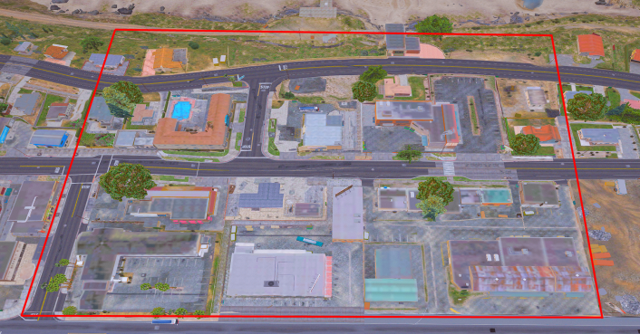

Bem-vindo ao nosso treinamento tático GRR.
Neste treinamento, você aprenderá as táticas e estratégias usadas pelo grupo de resposta rápida GRR, para planejar e executar operações de combate bem-sucedidas
na região norte da cidade Aurora.
Você também aprenderá a usar equipamentos e armas especiais, bem como técnicas avançadas de comunicação e trabalho em equipe para garantir a operação e
segurança dos membros da equipe. Prepare-se para adquirir habilidades valiosas e essenciais para combater de forma segura e eficaz como um membro
Policia Rodoviária Federado do Grupo de Resposta Rápida.
Vamos começar!
• BANCO PALETO BAY
QUANTIDADE: ☠️ Bandidos: Mínimo: 06 | Máximo: 07 (Sem refém)
👮 Policiais: Mínimo: 08 | Máximo: 13 (Sem refém)
QUANTIDADE: ☠️ Bandidos: Mínimo: 06 | Máximo: 08 (Com refém)
👮 Policiais: Mínimo: 08 | Máximo: 14 (Com refém)
🧍♂️ Reféns: Máximo 03
